Downloading Landsat Data
For easier download, Landsat imagery is organized in tiles (or scenes). Each scene is approximatelty 115 miles long and 115 miles wide. There are number of ways to access and download Landsat imagery. We will use the most common tool – USGS Earth Explorer – one of largest databases of remotely sensed data. Landsat data products will have the following download options:
Level-1 Product: Full resolution (.tif) individual band files
LandsatLook Images: Full resolution (.jpg) composite images
We will download Level-1 product and create composite images in QGIS. In order to work with Level-1 data, it is necessary to have a basic familiarity with multispectral imagery, and with Landsat sensors specifications. A multispectral (or multiband) imagery refers to image data that captures light within specific wavelength ranges across the electromagnetic spectrum. More specifically, it is a collection of several monochrome images, each of them taken with a sensor sensitive to a different wavelength. Individual images are referred to as bands. Landsat 5, for example, produces seven band images representing different wavelengths: three in visible wavelengths, four in infrared. In this exercise, we will use data from Landsat 5 and Landsat 8 sensors:
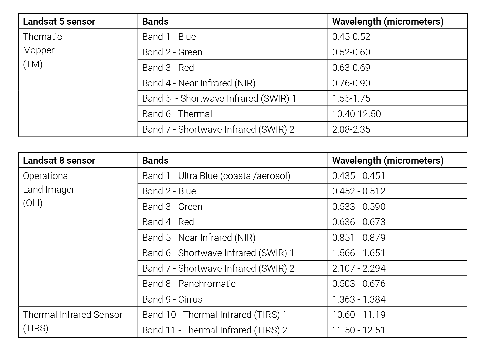In your web browser, go to Earth Explorer. First, you’ll have to create an account with USGS. In the top-right corner, click the “Register” button. Once you’ve created your account, sign in. In order to download data, here are the four steps you’ll need to follow:
Set your area of interest in the “Search Criteria” tab:
Zoom to desired area on the map (Houston) and generate your region of interest by clicking on a map.
Set the Date Range for satellite images (you are comparing Houston between 1987 and 2017, so you will have to repeat this, and all the following steps twice). First, to download data for 1987, set the Date Range to “Search from: 01/01/1987 to 09/30/1987.”
Select your data to download in the “Data Sets” tab:
The Data Sets tab answers the question “what data are you looking for?” In order to select the data, you need to know the basic history of the Landsat mission. Landsat 5 has been in orbit from March 1984 till January 2013, so we will search for Landsat 5 TM Level-1 Product:
-
Navigate to
Landsat > Collection 1 Level-1and selectLandsat 4-5 TM Level-1
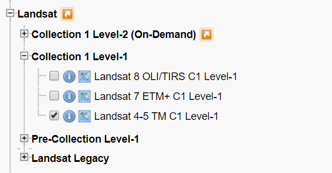
-
Filter your data in the “Additional Criteria” tab:
-
We need a cloudless image in order to be able to classify land use. Set the Land Cloud Cover to
Less than 10%. -
Set the Spacecraft Identifier to
Landsat 5. -
Set the Day/Night indicator to
Day. -
Review and download Landsat imagery in the “Results” tab:
-
Before downloading data, it’s good to check the footprint (by clicking on a footprint icon) in order to see the extent of the scene.
-
You can also preview the data, which can be good to see exactly where clouds are in the image.
-
Notice that the scenes are organized in paths and rows. We will use
Path: 25,Row: 39imagery acquired on04-APR-87for our analysis. -
Download Level-1 GeoTIFF Product.
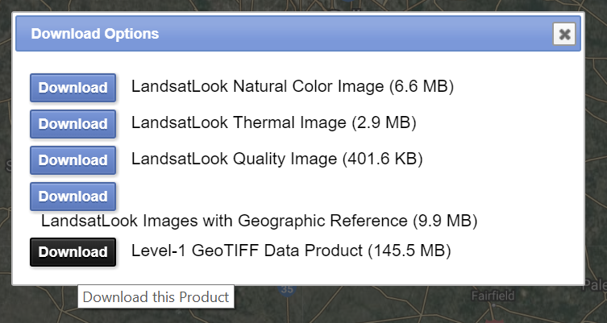


Next, we need to acquire imagery from 2017: Repeat steps 1-4, setting the Date Rage from 01/01/2017 to 09/30/2017 in the Search Criteria tab, and selecting Landsat 8 OLI/TIRS C1 Level-1 in the Data Sets tab. Under Additional Criteria, set the Land Cloud Cover again to Less than 10%, and Day/Night indicator to Day. After examining results, download Path: 25, Row: 39 scene from 21-MAR-17.
TIP: Knowing the path and row of your scene in advance helps defining the Area of Interest. Under Search Criteria, you have an option to click on the Path/Row tab and set the Path to “25” and Row to “39” to limit your results to this particular Landsat scene. Also, you can use the WRS-2 Path/Row to Latitude/Longitude Converter to identify the closest Landsat path and row from any given coordinates.
Unzip the data you’ve downloaded and place it in the your Change Mapping workspace. Take a moment to observe its contents. Notice that there are individual image files for each band, along with the metadata (file with the “MTL” suffix is the metadata file of the whole scene).
Semi-Automatic Classification Plugin
In order to work with the acquired imagery, we will use the Semi-Automatic Classification Plugin (SCP). SCP is a free and open source plugin for QGIS that allows for raster processing of remote sensing images. Detailed documetation, installation instructions, and tutorials can be found here.
Launch QGIS and navigate to menu item Plugins > Manage and Install Plugins.
Under "All," search for "Semi-Automatic Classification Plugin" and click Install Plugin.
Now that the plugin is installed, you should see an SCP dock and a toolbar added to QGIS.
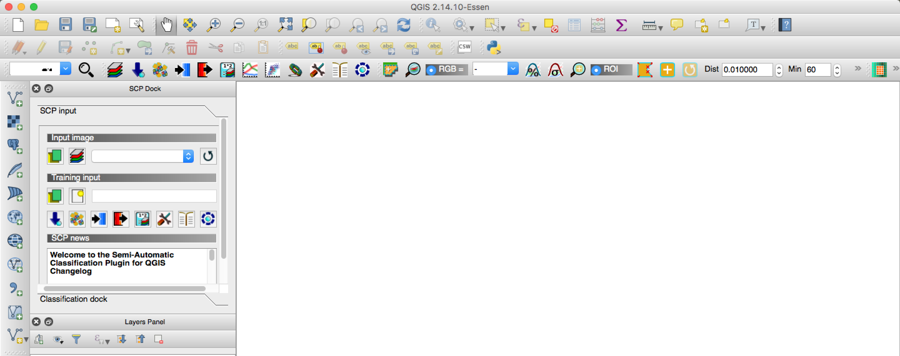Multispectral Visualization
Before we load the imagery, we will perform a conversion from radiance to reflectance (click here to read about the difference between radiance and reflectance).
Click on the
Preprocessing Toolon the SCP Toolbar and select "Landsat".Set the Directory containing Landsat Bands to "LT05_L1TP_025039_19870404_20161003_01_T1" and click
Choose. All the parameters from the metadata file should automatically load into the dialogue box.Check the
Apply DOS1 atmospheric correctionbox.Remove the Band 6 from the list by selecting
LT05_L1TP_025039_19870404_20161003_01_T1_B6.TIFans clicking on the "-" button.Click
Run. A window should pop-up prompting you to select a directory to store reflectance rasters. Create a new folder "1987_REF" and clickSave. The conversion should take few minutes to complete.
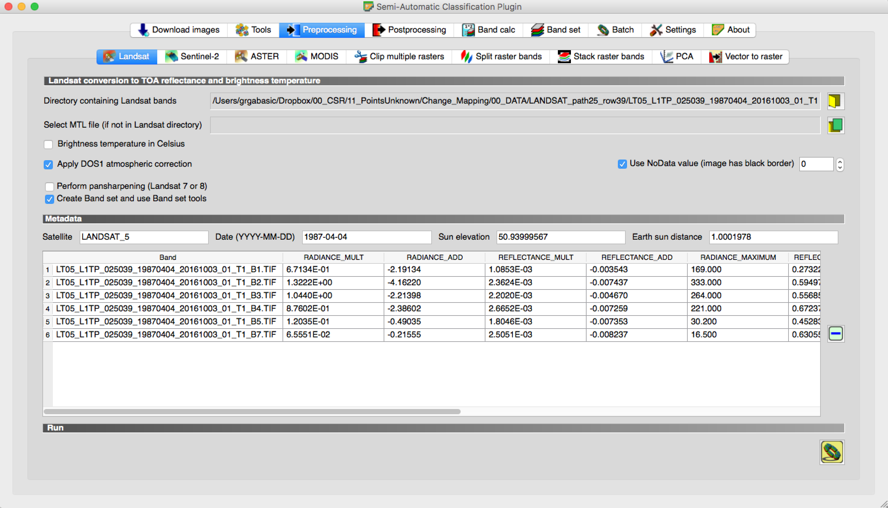
Clip Rasters
Our focus in this exercise is the mapping land cover change in the sprawling suburbs of Houston. Performing raster processing operations on the entire Landsat tile would therefore be cumbersome and praciacally useless, so the next step is to define and clip all rasters to a particular study area.
Navigate to menu item
Plugins > Manage and Install Plugins...Under "All", search for "Rectangles Ovals Digitizing" and click
Install Plugin.
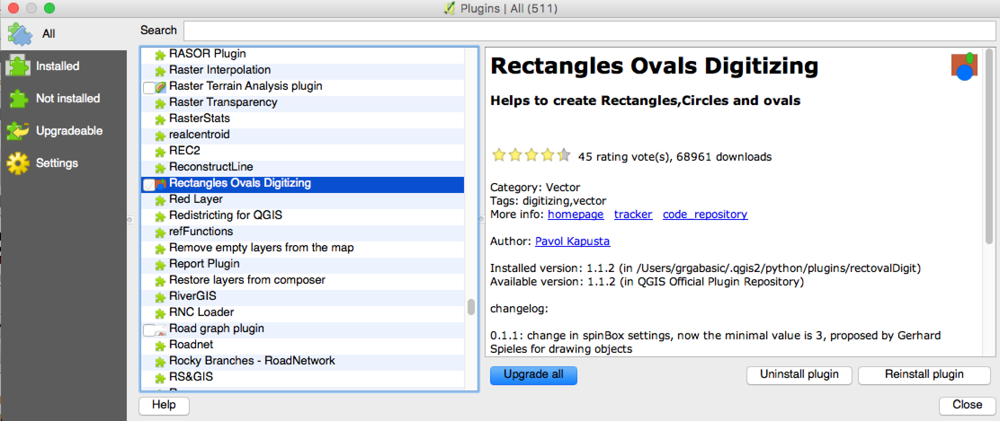
Right-click on any toolbar and make sure that "Digitizing Toolbar" and "Rectangles, ovals digitizing tools" are both added to your interface.
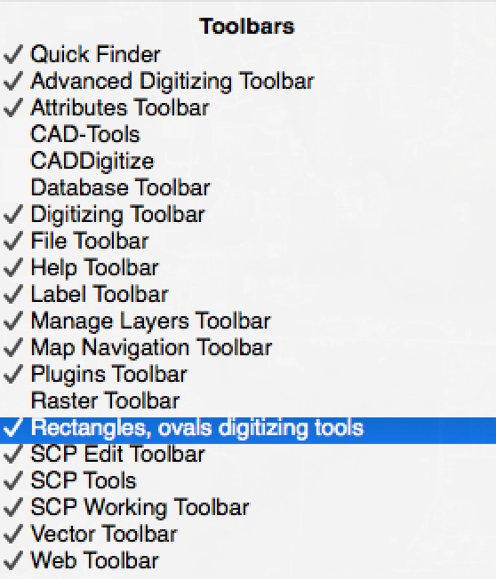
Click
New Shapefile Layerin the Manage Layers Toolbar. Select the type of shapefile you wish to create, which in this example isPolygon.Select the appropriate projection for your shapefile which for Houston is the
Project CRS (EPSG:32615 - WGS 84 / UTM zone 15N).Click
OKand save the shapefile as "study_area" in your working directory.
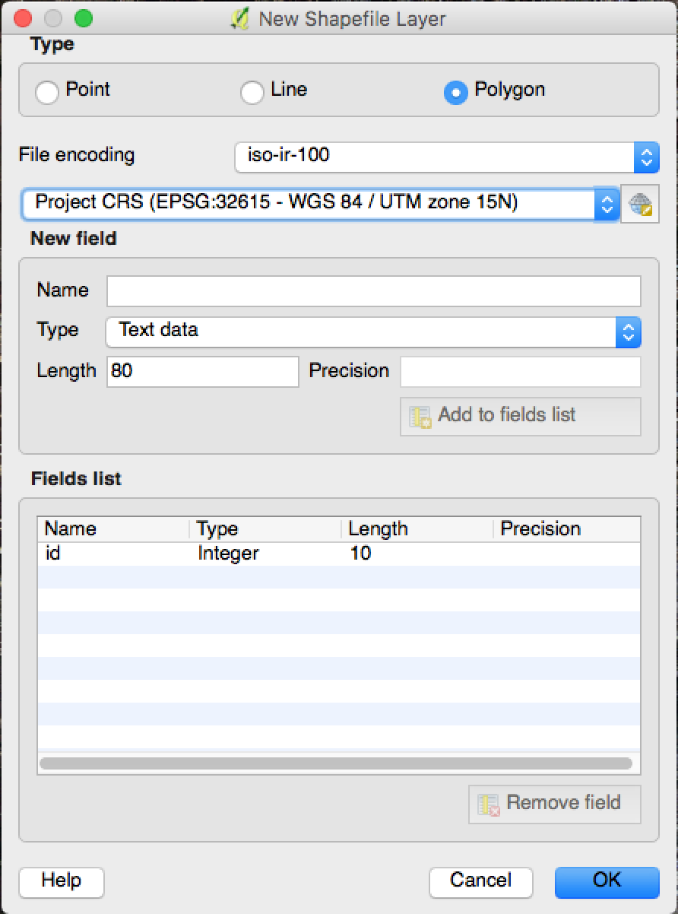
Zoom-in to the northwest Houston:
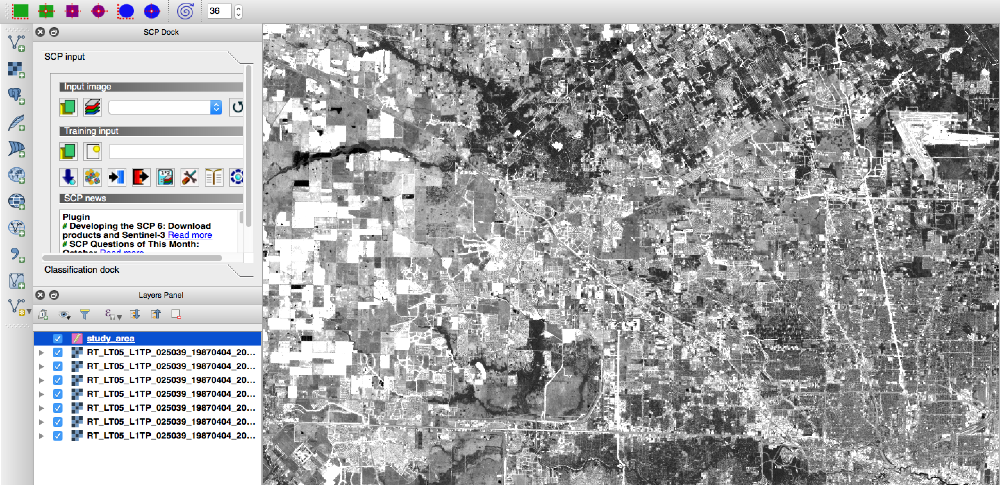
Right-click "study_area" in the Layers Panel and click
Toggle Editingto turn on editing mode.
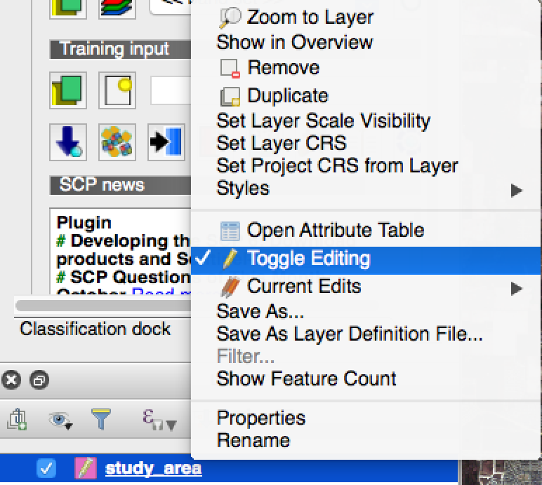
In the Rectangles Ovals Digitizing toolbar click on
Rectangle by extent. Click and drag over the imagery to draw the rectangle of your study area.
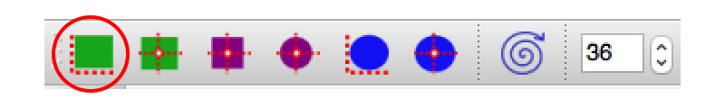
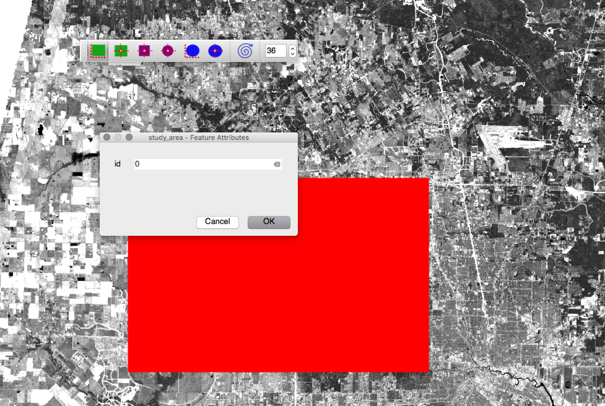
If you're satisfied with your study area, click on
Save Layer Editsin the Digitizing Toolbar and toggle off editing. Alternatively, click onCurrent Edits > Rollback for Selected Layer(s)and draw the rectangle again.
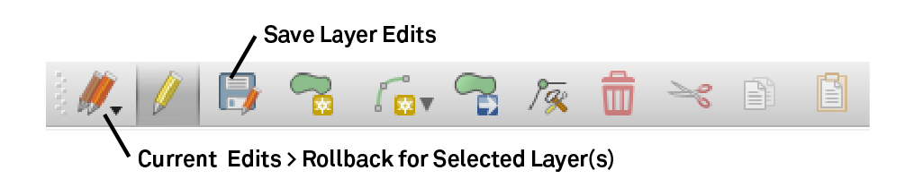
Finally, we will clip the imagery to the desred study area. Click
Preprocessingicon on the SCP Toolbar and navigate toClip multiple rasterstab.Select all Landsat bands. Check
Use shapefile for clippingand choose "study_area" as your clipping mask (if necessary, clickRefresh listbefore selecting imagery and shapefile for clipping).
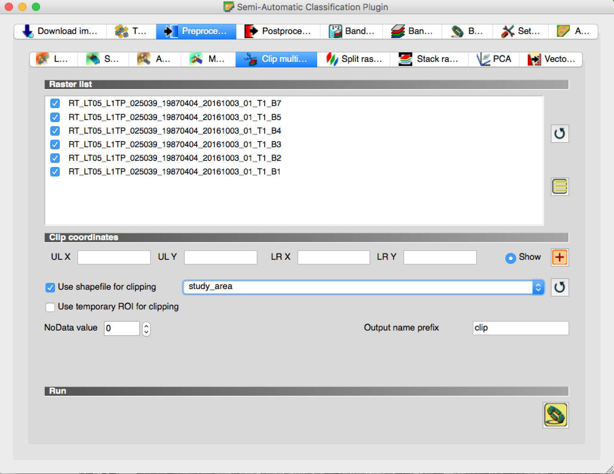
Click
Runand save new rasters in your working directory (TIP: Create a new folder specifically for clipped imagery)When done, remove original rasters from the scene.
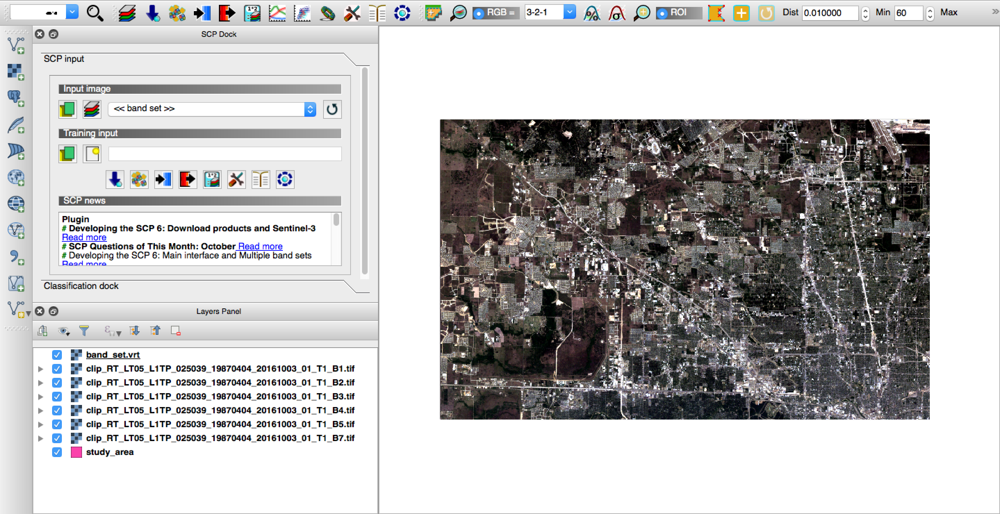
Create Band Set
Now we need to create a band set to begin classifying our color composites. To do so, go back to your pre-processing menu within the Semi-Automatic Classification Plugin and select Band Set to create a bandset. Hit refresh to load the clipped layers and select all, adding them to the band set definition tab at the bottom of your option menu. Then select Create virtual raster of band set and click Run. Now you'll have a virtual band set to work with.
Color Composites
A natural or true-color image combines actual measurements of red, green, and blue light. The Landsat 5 bands needed to create a True Color Composite are therefore Band 3: Red, Band 2: Green, Band 1: Blue (refer to the table at the top of the page). To set the bands to its corresponding channels, your Band set RGB composite should be set to 3-2-1.
True color composites resemble most closely to how we experience the world from ground perspective. On the other hand, false-color composites, which incorporate wavelengths of light invisible to humans, may look deceiving, but they can reveal fascinating information and are much more useful in conducting analysis. One of the most common false color composite is the so-called Color Infrared, which uses Near Infrared Band (NIR) as Red, Red Band as Green, and Green Band as Blue. This is a traditional band combination useful in seeing changes in plant health. Plants reflect NIR and green light and absorb red. Because they reflect more NIR than green, plant-covered land appears deep red.
To display a Near Infrared composite, set the RGB color composite to 4-3-2.
Another common composite is so-called False Color Urban which, as the name suggests, is useful in visualizing urban environments. False color urban uses both SWIR bands, and red band. This will be a useful combination for our analysis.
To display a False Color Urban composite, manually enter 6-5-3 in the RGB color composite list.
Image Classification
To classify the image, we will use a Supervised Classification technique. Supervised classification is based on the idea that a user can select sample pixels in an image that are representative of specific classes and then direct the image processing software to use these training samples as references for the classification of all other pixels in the image. Training samples are selected based on the knowledge of the user.
According to the National Land Cover Database (NLCD) 1992 (which is a Landsat-based, 30-meter resolution land cover database for the whole country), our study area was at the time classified into multiple categories such as High Intensity Residential, Commercial/Industrial/Transportation, Pasture/Hay, Woody Wetlands, Emergent Herbaceous Wetlands, Crops, Mixed Forest, etc.
Classifying image into such classes is beyond the scope of this tutorial. Also, using official NLCD classes is not pertinent for the story that focuses on rampant real-estate developmet in the past 30 years. We will instead classify image into following simplified classes:
Vegetation
Bare Soil
Water (if aplicable)
Develped
Create Training Samples
In the SCP Dock, click on the Create a new training input button and save it as "1987_training" in your working directory. Make sure that the << band set >> is selected as input image for classification.
Next, we need to define the so-called ROIs (Regons of Interest), or samples of classes:
Click on the
Activate ROI pointerbutton. ROI pointer uses region-growing algorithm to select pixels of similar spectral values.
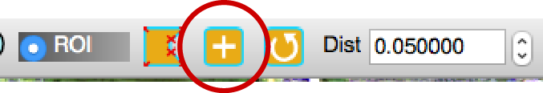
Pan around the image to find a good bright green vegetation sample area and then click on it. All the similar pixels nearby should be selected.
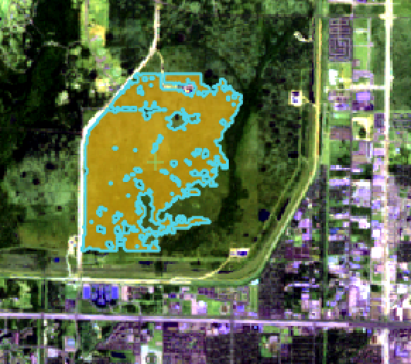
Change the
Dist(spectral distance) parameter, and clickRedo the ROI at the same pointbutton to select larger (or smaller) ROIs.When satisfied with the ROI, click on Classification Dock (located on the the SCP Dock) and scroll down to the ROI creation tab. Set the "MC ID" (macroclass ID) to
1and "MC Info" toVegetation.Set the "C ID" to
1and C Info tovegetation1and save it to the ROI signature list by clicking onSave temporary ROI to training input. button
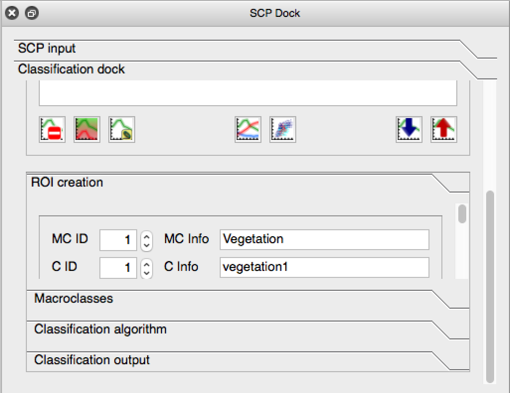
Create another vegetation ROI by selecting dark green pixels. Again, set the "MC ID" to
1and "MC Info" toVegetation. Set the "C ID" to2and "C Info" tovegetation2and save it to the ROI signature list.If you notice and water bodies in your scene, create a new macroclass ROI by clicking over it. Set the new "MC ID" to
2and "MC Info" toWater. Set the "C ID" to3and "C Info" towaterand save it to the ROI signature list.Next, create a new macroclass ROI by clicking over white/yellow (Bare Soil) region on the image. Set the "MC ID" to
3and "MC Info" toBare Soil. Set the "C ID" to4and "C Info" tobareand save it to the ROI signature list.Finally, create a new macroclass ROI by clicking over purple (residential) region on the image. Set the "MC ID" to
4and "MC Info" toDeveloped. Set the "C ID" to5and "C Info" tobuilt-up1and save it to the ROI signature list.
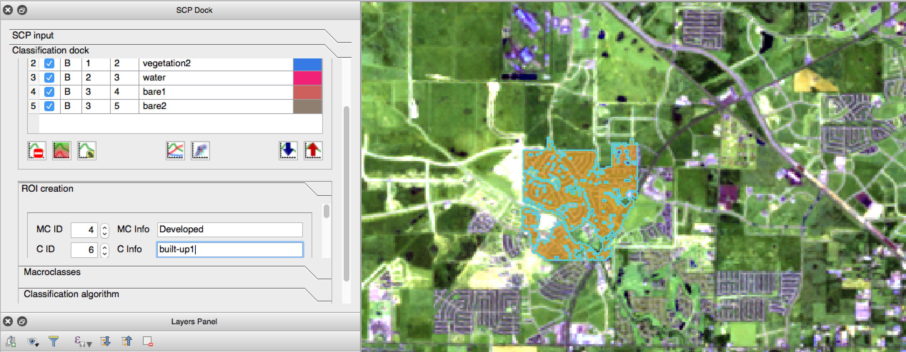
Repeat the step one one two more times by selecting more purple regions and saving new classes e.g.
built-up2, built-up3 etc.under MC ID: 4When you're done with collecting samples, open "Macroclasses" tab and assign colors to macroclasses by double-clicking "Color" field.
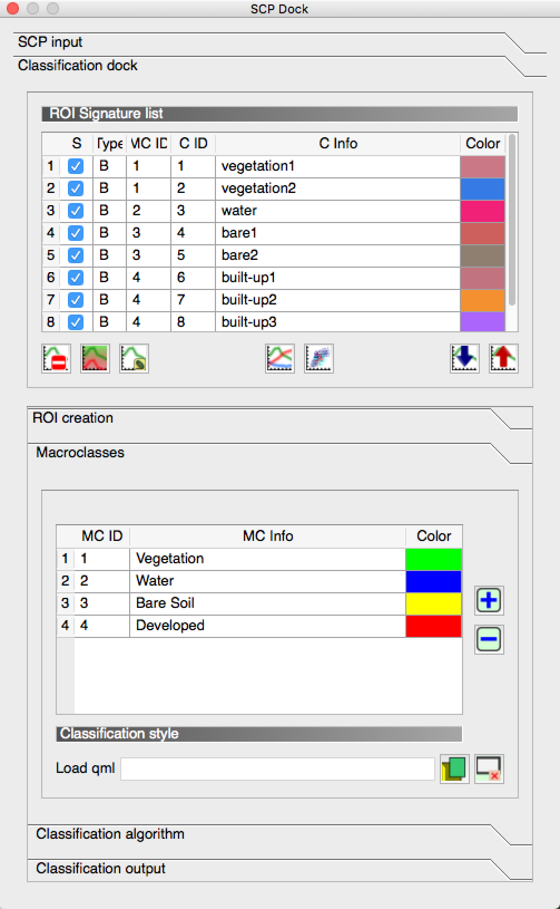
Preview Classification
Before we create a new classified raster of the scene, it's useful to create a classification preview in order to assess the quality of collected samples. In SCP dock, navigate to "Classification Algorithm" tab and check MC ID tab. Set the algorithm to Maximum Likelihood.
In SCP toolbar, click on Activate classification preview pointer. Click anwhere on the image to create a preview. A new, temporary raster will be added to the scene.
Classify Image
If you are satisfied with the preview and you think the ROIs you collected are sufficient to create a good classification, navigate to "Classification Output" tab and click the Run button to save a classification raster.
A new classified raster will be added to the scene.
Developed Figure-Ground
Next we will generate a figure-ground map for the class "Developed" from the previously generated classified raster. The resulting map will be a binary Developed / Non-developed raster where all classes except the built-up ground (water, vegetation, bare soil) will be merged together. Figure-ground maps such as this are useful in representing changes in only one land cover category.
Click on the
Postprocessingbutton in the SCP Toolbar. An SCP postprocessing dialogue box will pop up.Set the input classification to the classified rasted you've just generated (in my case it's "1987_cls.tif") and click on
Calculate unique values.Values
1.0, 2.0, 3.0, 4.0(for vegetation, water, bare soil, and developed, respectively) should automatically populate the list of old values.Set the new values to
1for non-Developed (1.0, 2.0, 3.0) and2for developed (4.0).Under Symbology, uncheck the
Use code from Signature listbox.
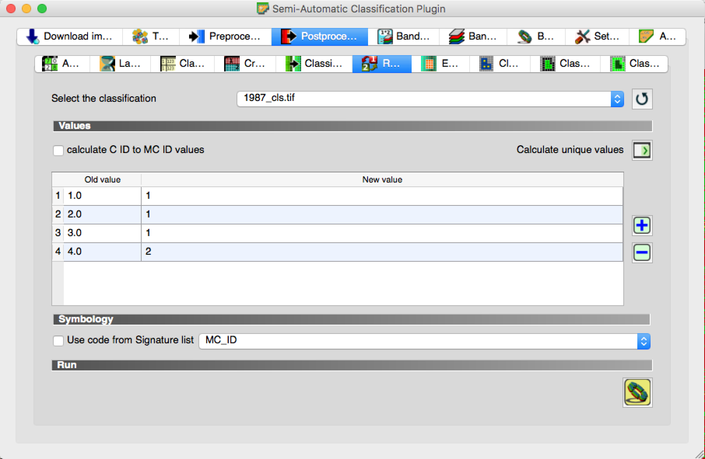
Click
Runand save the new raster as "1987_figure-ground". A new raster will be added to the scene.In the Layers Panel, right-click on new raster and choose "Properties".
Under Style, set the Color gradient to
White to black(in order for Developed to be displayed as black, and Non-developed as white). ClickOK.
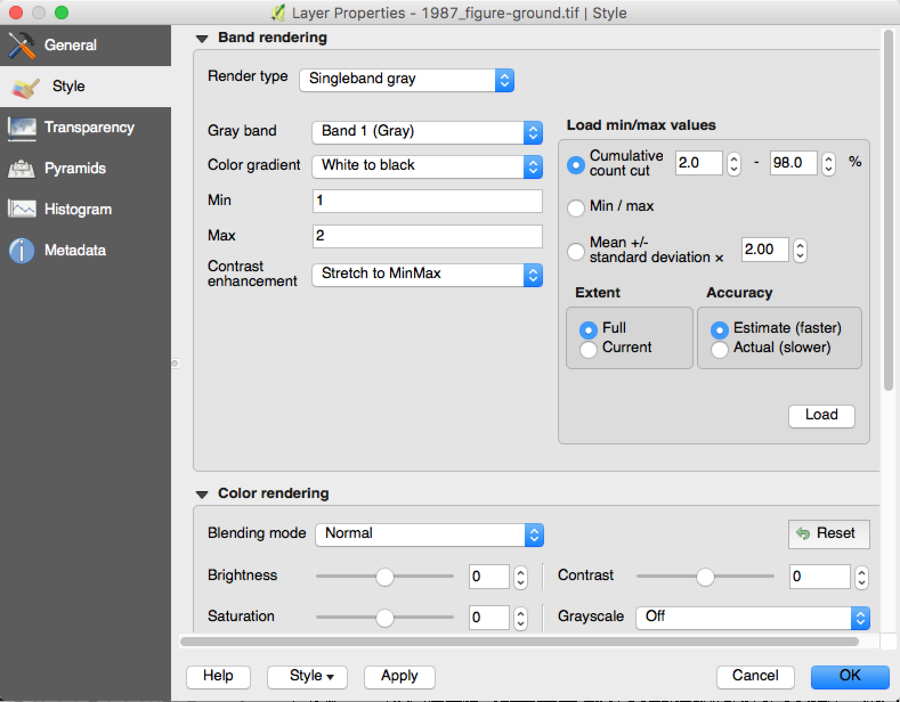
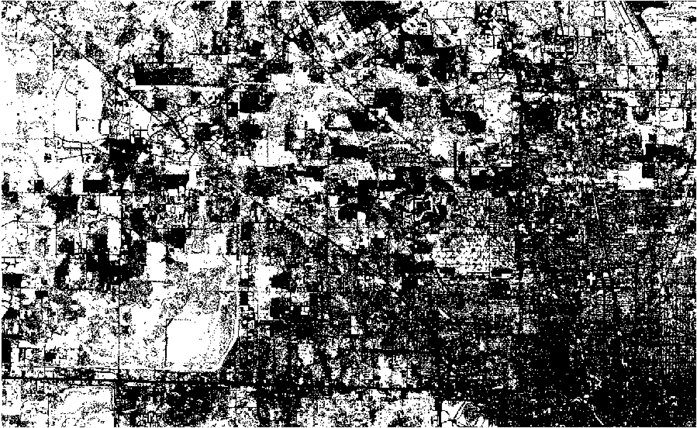
Measure Change
In order to visualize and calculate surface areas that got developed between 1987 and 2017, we first need to perform Image Classification (including conversion to reflectance, clipping, and multispectral visualization) for 2017 imagery. Create a blank document for 2017 classification and repeat the steps above for the LC08_L1TP_025039_20170321_20170329_01_T1 scene (21-MAR-17), with one important exception:
Landsat 8's sensor (Operatioanl Land Imager) includes a new coastal/aerosol band (band1) and slightly different band order (refer to the table at the top of the page). Thus, in order to produce equivalent color composites for 2017 using SCP (3-2-1, 4-3-2, and 6-5-3), Band 1 and Bands 8-11 will be removed during preprocessing (conversion to reflectance), while Band 6 will be included.
Once you're done with 2017 reclassification, remove all layers from your image except 2017_reclass. Add 1987_reclass raster that you've generated previously to your scene for comparison.
Next, navigate to menu item Raster > Raster calculator.
Double-click
2017_reclass.tif@1Click
-Double-click
1987_reclass.tif@1Your formula should look like this :
"2017_reclass.tif@1" - "1987_reclass@1"
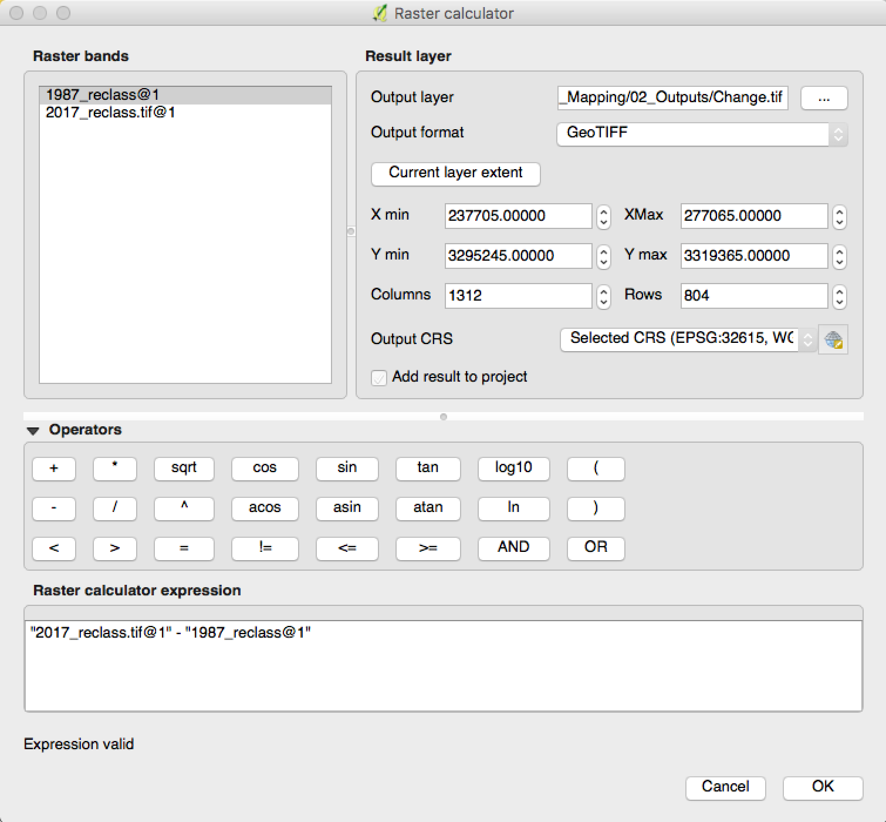
Save raster as "Change.tif"
A new raster should be added to the scene with the folowing values:
-1change from developed to non-developed (1-2)0no change (either 2-2, or 1-1)1change from non-developed to developed (2-1)
Measure Change, Part 2
Now that you've generated a new shape file highlighting measured change in your scene, you need to convert your raster file into a vector file so that you can perform calculations on your measurements. To do so, go to
Rasterin your menu bar and unfold theConversionmenu. Here, selectPolygonize (Raster to Vector).
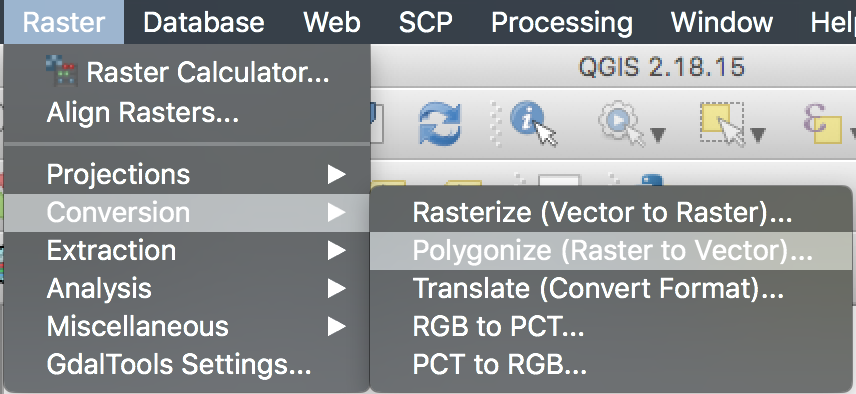
You'll then be prompted to save your shape file. Be sure to save it in the proper projection
Project CRS (EPSG:32615 - WGS 84 / UTM zone 15N).
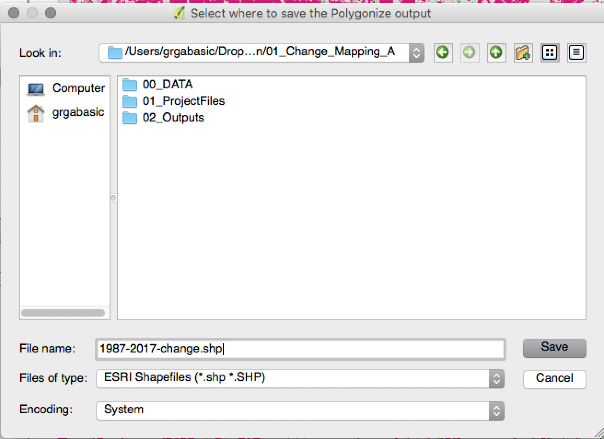
Once you've generated a vector file from your data, go into your attribute table, go into the field calculator, and create a new field for Area using the command
$area. We've done this in the previous two tutorials.Next, we will perform styling and analysis that we used in our tutorial on Census Joins. To calculate the sum of area within each defined category, we need to perform basic statistical anaylsis. In QGIS, select
Toolboxfrom theProcessingtab in the overhead menu. Once selected, a new tab will appear on the right (the processing toolkit). In the processing toolkit, expand the 'QGIS Geoalgorithms' > 'Vector Table Tools' item and selectStatistics by Categories.For
Input vector layer, select the layer you just created for measured change (Vector). We want the sum of the area for each category: Perveous -> Developed, No Change, Developed -> Perveous. Therefore, select 'area' for theField to calculate statistics on. Lastly, we want the sums by type, so please choose 'DN' from theField with categories. This will generate a new table showing the total area of each category (in the native unit of the projection).Lastly, we will style this using categorical styling based on the categories we defined (Perveous -> Developed, No Change, Developed -> Perveous). This will output something similar to below, highlighting areas of development, no change, or reclamation of perveous land.
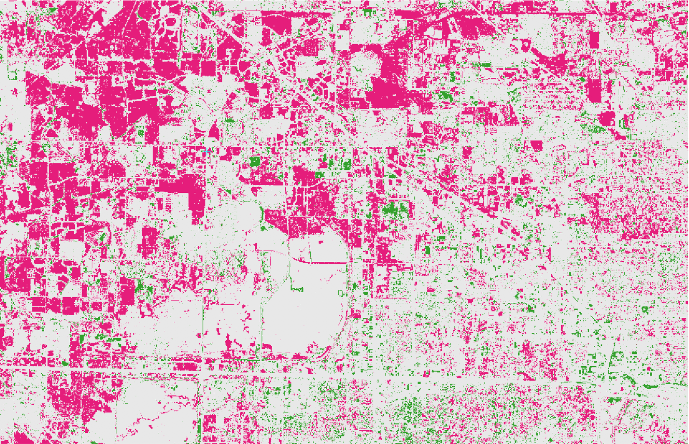